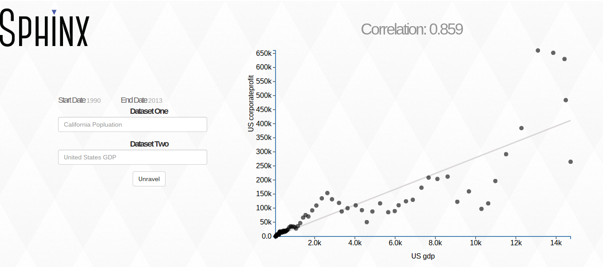

Sphinx
Personal Project
This was built for Big Hack and LA Hacks 2014 with my partner Jacqueline Xu. Built using: Python, d3.js, Heroku, Flask, HTML/CSS
What it does
Sphinx is a data analysis and visualizing tool. Given any two queries (usually given as a noun / pronoun), it finds the corresponding data sets on the web and performs analysis on them (only regression implemented now).
How it Works
First, it parses the search box by simply looking for "tag" phrases - we did not implement any NLP since this was for a hackathon. These tags are then mapped to sources (BEA, Census, etc) which then map to actual datasets. Once these datasets are pulled they are cached in our own "database" (kinda) to avoid max API requests and to increase plot speed. The data is given to Python scipy to do the actual analysis. The results are passed to Flask which gives it to d3 for pretty plotting.
Screenshots


If you want to see a video of Sphinx in clumsy action, check out this youtube link.